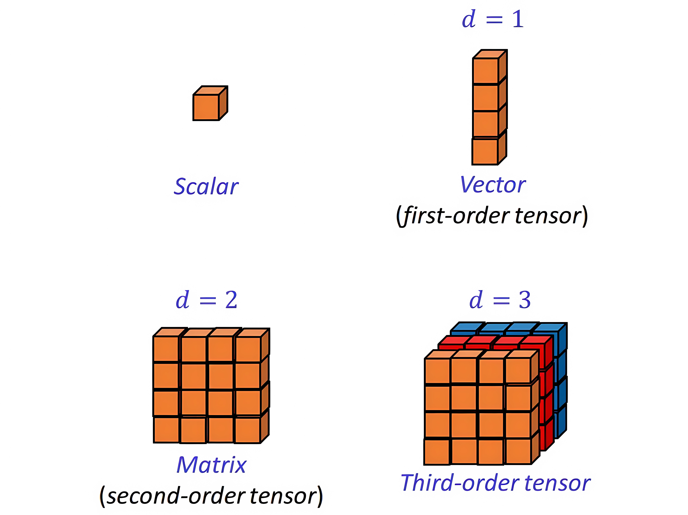
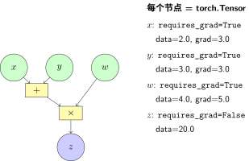

从 NumPy 到 PyTorch：张量的本质#
还记得 计算图 中那个简单的计算图吗？
在数学上，\(x\)、\(y\)、\(w\)、\(z\) 只是符号。但在代码中，它们需要存储在内存里，需要支持数学运算，还需要记录梯度信息——这就是 张量（Tensor） 的作用。
本章我们将看到：PyTorch 的 Tensor 不仅是 NumPy 数组的 GPU 版本，更是 计算图 中节点的工程实现。
回顾：NumPy 是什么？#
如果你熟悉 Python 科学计算，一定用过 NumPy：
import numpy as np
# NumPy 数组：高效存储多维数据
x = np.array([[1.0, 2.0], [3.0, 4.0]])
y = np.array([[5.0, 6.0], [7.0, 8.0]])
# 矩阵乘法：对应数学中的 $Z = X \cdot Y$
z = np.dot(x, y)
print(z)
# [[19. 22.]
# [43. 50.]]
NumPy 解决了 Python 列表的两个问题：
存储效率：连续内存，比 Python 列表快 10-100 倍
运算效率：底层 C 实现，向量化操作避免 Python 循环
但这对于深度学习还不够。
为什么 NumPy 不够用？#
问题 1：没有自动微分#
在 反向传播算法 中，我们需要计算 \(\frac{\partial L}{\partial w}\)。用 NumPy，你必须手动推导和实现：
# NumPy 实现线性回归的梯度
# 手动推导：dL/dw = 2 * X^T @ (Xw - y) / n
def compute_gradient(X, y, w):
n = len(y)
predictions = X @ w
error = predictions - y
gradient = 2 * X.T @ error / n # 手动实现的梯度公式
return gradient
问题：稍微复杂的网络（比如 LeNet），梯度公式有几十行，非常容易出错。
问题 2：不能用 GPU#
现代 GPU 有数千个计算核心，比 CPU 快 10-100 倍。但 NumPy 只能在 CPU 上运行。
# 大规模矩阵乘法在 CPU 上可能要几分钟
large_matrix = np.random.randn(10000, 10000)
result = large_matrix @ large_matrix # CPU 计算，慢！
问题 3：与深度学习生态脱节#
NumPy 是通用科学计算库，没有：
预定义的神经网络层（卷积、池化等）
优化器（SGD、Adam 等）
数据加载和预处理工具
需要一个新的数据结构：保持 NumPy 的易用性，同时解决上述问题。这就是 PyTorch 的 Tensor。
张量的维度层级：
{kind=link}

张量维度从标量到高阶张量：0维标量（Scalar）、1维向量（Vector）、2维矩阵（Matrix）、3维张量（Third-order tensor）。张量的阶数（order）等于索引它的下标数量。#
PyTorch 张量：NumPy + 自动微分 + GPU#
基础用法：和 NumPy 几乎一样#
import torch
# 创建张量：语法和 NumPy 几乎相同
x = torch.tensor([[1.0, 2.0], [3.0, 4.0]])
y = torch.tensor([[5.0, 6.0], [7.0, 8.0]])
# 矩阵乘法：语法也类似
z = torch.matmul(x, y)
print(z)
# tensor([[19., 22.],
# [43., 50.]])
关键区别：torch.Tensor 是 计算图 中的节点，而 np.array 只是数据存储。
张量作为计算图节点：

张量与计算图节点的对应
关键特性 1：自动微分#
这是 PyTorch 张量最核心的特性——自动记录计算历史。
# 创建需要梯度的张量（对应计算图中的参数节点）
x = torch.tensor(2.0, requires_grad=True)
w = torch.tensor(3.0, requires_grad=True)
# 前向计算：z = x * w
z = x * w
print(f"z = {z}") # z = 6.0
# 反向传播：计算梯度
z.backward()
# 查看梯度
print(f"∂z/∂x = {x.grad}") # ∂z/∂x = w = 3.0
print(f"∂z/∂w = {w.grad}") # ∂z/∂w = x = 2.0
这对应什么理论？
这行代码 z.backward() 实现了 反向传播算法 的全部逻辑：
自动构建计算图
从输出节点回溯
应用链式法则计算每个参数的梯度
在 NumPy 中，这需要几十行代码手动实现。PyTorch 只需要一行。
关键特性 2：GPU 加速#
# 检查是否有 GPU
if torch.cuda.is_available():
device = torch.device('cuda')
print(f"使用 GPU: {torch.cuda.get_device_name(0)}")
else:
device = torch.device('cpu')
print("使用 CPU")
# 把张量移到 GPU
x_gpu = x.to(device)
w_gpu = w.to(device)
# 现在在 GPU 上计算
z_gpu = x_gpu * w_gpu
性能对比
在 实验对比：全连接 vs CNN 中，我们讨论了训练速度。使用 GPU 通常比 CPU 快 10-100 倍，这让训练大模型（如 ResNet）成为可能。
张量的属性：理解计算图节点#
每个 PyTorch 张量都有三个关键属性，对应 计算图 中的节点特性：
属性 |
含义 |
对应计算图概念 |
|---|---|---|
|
存储的数值 |
节点的值 |
|
梯度值 |
损失对该节点的偏导数 |
|
是否需要梯度 |
是否是参数节点 |
|
是否是叶子节点 |
是否是输入/参数 |
# 详细查看张量属性
x = torch.tensor(2.0, requires_grad=True)
print(f"值: {x.data}") # 2.0
print(f"需要梯度: {x.requires_grad}") # True
print(f"是否叶子: {x.is_leaf}") # True
# 经过运算后的张量
y = x * 3
print(f"y 是否叶子: {y.is_leaf}") # False（中间节点）
完整示例：线性回归的 NumPy vs PyTorch#
让我们用同一个问题（线性回归）对比两种实现，看看 PyTorch 如何简化代码：
NumPy 实现（手动梯度）#
import numpy as np
# 数据：y = 2x + 1 + noise
np.random.seed(42)
X = np.random.randn(100, 1)
y = 2 * X + 1 + np.random.randn(100, 1) * 0.1
# 参数初始化
w = np.zeros((1, 1))
b = np.zeros(1)
# 训练 100 步
lr = 0.1
for epoch in range(100):
# 前向传播
y_pred = X @ w + b
# 计算损失
loss = np.mean((y_pred - y) ** 2)
# 手动计算梯度（需要推导公式！）
# ∂L/∂w = 2 * X^T @ (y_pred - y) / n
# ∂L/∂b = 2 * mean(y_pred - y)
grad_w = 2 * X.T @ (y_pred - y) / len(X)
grad_b = 2 * np.mean(y_pred - y)
# 参数更新（梯度下降）
w -= lr * grad_w
b -= lr * grad_b
print(f"学习到的参数: w={w[0,0]:.3f}, b={b[0]:.3f}")
# 应该接近 w=2, b=1
PyTorch 实现（自动微分）#
import torch
# 数据
torch.manual_seed(42)
X = torch.randn(100, 1)
y = 2 * X + 1 + torch.randn(100, 1) * 0.1
# 参数：requires_grad=True 表示需要计算梯度
w = torch.zeros((1, 1), requires_grad=True)
b = torch.zeros(1, requires_grad=True)
# 训练
lr = 0.1
for epoch in range(100):
# 前向传播
y_pred = X @ w + b
# 计算损失
loss = torch.mean((y_pred - y) ** 2)
# 反向传播：自动计算所有梯度！
loss.backward()
# 参数更新
with torch.no_grad(): # 更新时不需要计算梯度
w -= lr * w.grad
b -= lr * b.grad
w.grad.zero_() # 清空梯度，准备下一轮
b.grad.zero_()
print(f"学习到的参数: w={w.item():.3f}, b={b.item():.3f}")
对比分析
方面 |
NumPy 实现 |
PyTorch 实现 |
|---|---|---|
梯度计算 |
手动推导公式（易错） |
|
代码行数 |
需要额外 3-4 行梯度计算 |
一行搞定 |
扩展性 |
网络复杂后难以维护 |
自动处理任意复杂网络 |
对应理论 |
手动实现 梯度下降与优化算法 |
框架封装了优化算法 |
核心洞察：PyTorch 没有改变算法，只是自动化了机械性的梯度计算。
常见陷阱#
陷阱 1：原地修改张量#
x = torch.tensor([1.0, 2.0], requires_grad=True)
# 错误：原地修改会破坏计算图
# x += 1 # 这会报错！
# 正确：创建新张量
x = x + 1 # 这是安全的
陷阱 2：忘记清空梯度#
# 错误：梯度会累加！
for epoch in range(100):
loss = compute_loss()
loss.backward()
# 如果不清空，w.grad 会累加所有轮次的梯度
陷阱 3：在梯度计算图中更新参数#
# 错误：这会在计算图中记录参数更新操作
w = w - lr * w.grad # 不要这样做！
# 正确：用 torch.no_grad() 上下文
with torch.no_grad():
w -= lr * w.grad
下一步#
现在你已经理解了张量是 计算图 的代码实现。接下来：
张量操作：数据在网络中的流动：学习张量的各种操作（reshape、transpose 等），理解它们对应的数据流变换
神经网络模块：搭建计算图：用张量搭建 全连接神经网络 和 卷积神经网络 中的网络
关键认知：PyTorch 开发的核心流程就是——
用
torch.Tensor存储数据（对应计算图节点）用张量运算实现前向传播（数据流动）
用
.backward()自动计算梯度（反向传播）用优化器更新参数（梯度下降）
贡献者与修订历史
查看详细修订记录
-
b20ef3e2026-04-28 - Heyan Zhu: docs: update pytorch practice section with detailed explanations and code examples -
0c291d72025-12-10 - Heyan Zhu: docs: restructure course materials and add new content